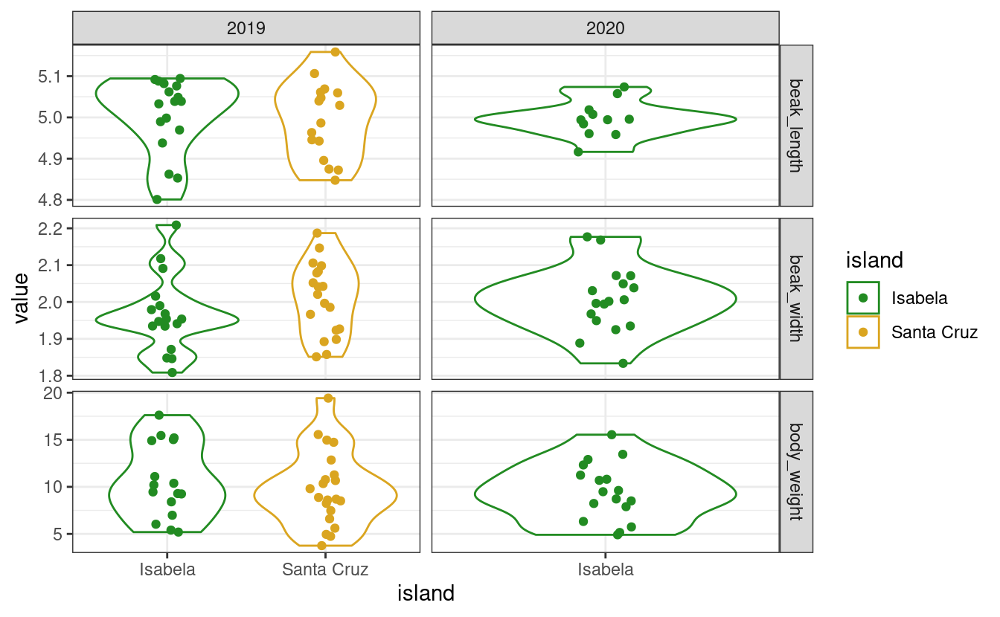

Section 2 Reshaping data tables in the tidyverse, and other things
Raphael Scherrer

In this chapter we will learn what tidy means in the context of the tidyverse, and how to reshape our data into a tidy format using the tidyr package. But first, let us take a detour and introduce the tibble.
2.1 The new data frame: tibble
The tibble is the recommended class to use to store tabular data in the tidyverse. Consider it as the operational unit of any data science pipeline. For most practical purposes, a tibble is basically a data.frame.
# Make a data frame
data.frame(who = c("Pratik", "Theo", "Raph"), chapt = c("1, 4", "3", "2, 5"))
#> who chapt
#> 1 Pratik 1, 4
#> 2 Theo 3
#> 3 Raph 2, 5
# Or an equivalent tibble
tibble(who = c("Pratik", "Theo", "Raph"), chapt = c("1, 4", "3", "2, 5"))
#> # A tibble: 3 x 2
#> who chapt
#> <chr> <chr>
#> 1 Pratik 1, 4
#> 2 Theo 3
#> 3 Raph 2, 5The difference between tibble and data.frame is in its display and in the way it is subsetted, among others. Most functions working with data.frame will work with tibble and vice versa. Use the as* family of functions to switch back and forth between the two if needed, using e.g. as.data.frame or as_tibble.
In terms of display, the tibble has the advantage of showing the class of each column: chr for character, fct for factor, int for integer, dbl for numeric and lgl for logical, just to name the main atomic classes. This may be more important than you think, because many hard-to-find bugs in R are due to wrong variable types and/or cryptic type conversions. This especially happens with factor and character, which can cause quite some confusion. More about this in the extra section at the end of this chapter!
Note that you can build a tibble by rows rather than by columns with tribble:
tribble(
~who, ~chapt,
"Pratik", "1, 4",
"Theo", "3",
"Raph", "2, 5"
)
#> # A tibble: 3 x 2
#> who chapt
#> <chr> <chr>
#> 1 Pratik 1, 4
#> 2 Theo 3
#> 3 Raph 2, 5As a rule of thumb, try to convert your tables to tibbles whenever you can, especially when the original table is not a data frame. For example, the principal component analysis function prcomp outputs a matrix of coordinates in principal component-space.
# Perform a PCA on mtcars
pca_scores <- prcomp(mtcars)$x
head(pca_scores) # looks like a data frame or a tibble...
#> PC1 PC2 PC3 PC4 PC5 PC6 PC7 PC8
#> Mazda RX4 -79.60 2.13 -2.15 -2.707 -0.702 -0.3149 -0.09870 -0.0779
#> Mazda RX4 Wag -79.60 2.15 -2.22 -2.178 -0.884 -0.4534 -0.00355 -0.0957
#> Datsun 710 -133.89 -5.06 -2.14 0.346 1.106 1.1730 0.00576 0.1362
#> Hornet 4 Drive 8.52 44.99 1.23 0.827 0.424 -0.0579 -0.02431 0.2212
#> Hornet Sportabout 128.69 30.82 3.34 -0.521 0.737 -0.3329 0.10630 -0.0530
#> Valiant -23.22 35.11 -3.26 1.401 0.803 -0.0884 0.23895 0.4239
#> PC9 PC10 PC11
#> Mazda RX4 -0.200 -0.2901 0.106
#> Mazda RX4 Wag -0.353 -0.1928 0.107
#> Datsun 710 -0.198 0.0763 0.267
#> Hornet 4 Drive 0.356 -0.0906 0.209
#> Hornet Sportabout 0.153 -0.1886 -0.109
#> Valiant 0.101 -0.0377 0.276
class(pca_scores) # but is actually a matrix
#> [1] "matrix"
# Convert to tibble
as_tibble(pca_scores)
#> # A tibble: 32 x 11
#> PC1 PC2 PC3 PC4 PC5 PC6 PC7 PC8 PC9 PC10
#> <dbl> <dbl> <dbl> <dbl> <dbl> <dbl> <dbl> <dbl> <dbl> <dbl>
#> 1 -79.6 2.13 -2.15 -2.71 -0.702 -0.315 -0.0987 -0.0779 -0.200 -0.290
#> 2 -79.6 2.15 -2.22 -2.18 -0.884 -0.453 -0.00355 -0.0957 -0.353 -0.193
#> 3 -134. -5.06 -2.14 0.346 1.11 1.17 0.00576 0.136 -0.198 0.0763
#> 4 8.52 45.0 1.23 0.827 0.424 -0.0579 -0.0243 0.221 0.356 -0.0906
#> 5 129. 30.8 3.34 -0.521 0.737 -0.333 0.106 -0.0530 0.153 -0.189
#> 6 -23.2 35.1 -3.26 1.40 0.803 -0.0884 0.239 0.424 0.101 -0.0377
#> # … with 26 more rows, and 1 more variable: PC11 <dbl>This is important because a matrix can contain only one type of values (e.g. only numeric or character), while tibble (and data.frame) allow you to have columns of different types.
So, in the tidyverse we are going to work with tibbles, got it. But what does “tidy” mean exactly?
2.2 The concept of tidy data
When it comes to putting data into tables, there are many ways one could organize a dataset. The tidy format is one such format. According to the formal definition, a table is tidy if each column is a variable and each row is an observation. In practice, however, I found that this is not a very operational definition, especially in ecology and evolution where we often record multiple variables per individual. So, let’s dig in with an example.
Say we have a dataset of several morphometrics measured on Darwin’s finches in the Galapagos islands. Let’s first get this dataset.
# We first simulate random data
beak_lengths <- rnorm(100, mean = 5, sd = 0.1)
beak_widths <- rnorm(100, mean = 2, sd = 0.1)
body_weights <- rgamma(100, shape = 10, rate = 1)
islands <- rep(c("Isabela", "Santa Cruz"), each = 50)
# Assemble into a tibble
data <- tibble(
id = 1:100,
body_weight = body_weights,
beak_length = beak_lengths,
beak_width = beak_widths,
island = islands
)
# Snapshot
data
#> # A tibble: 100 x 5
#> id body_weight beak_length beak_width island
#> <int> <dbl> <dbl> <dbl> <chr>
#> 1 1 10.8 4.94 1.94 Isabela
#> 2 2 15.4 5.02 2.00 Isabela
#> 3 3 15.0 4.92 1.91 Isabela
#> 4 4 8.51 5.16 2.02 Isabela
#> 5 5 14.9 5.03 1.93 Isabela
#> 6 6 8.41 4.92 2.18 Isabela
#> # … with 94 more rowsHere, we pretend to have measured beak_length, beak_width and body_weight on 100 birds, 50 of them from Isabela and 50 of them from Santa Cruz. In this tibble, each row is an individual bird. This is probably the way most scientists would record their data in the field. However, a single bird is not an “observation” in the sense used in the tidyverse. Our dataset is not tidy but messy.
The tidy equivalent of this dataset would be:
data <- pivot_longer(
data,
cols = c("body_weight", "beak_length", "beak_width"),
names_to = "variable"
)
data
#> # A tibble: 300 x 4
#> id island variable value
#> <int> <chr> <chr> <dbl>
#> 1 1 Isabela body_weight 10.8
#> 2 1 Isabela beak_length 4.94
#> 3 1 Isabela beak_width 1.94
#> 4 2 Isabela body_weight 15.4
#> 5 2 Isabela beak_length 5.02
#> 6 2 Isabela beak_width 2.00
#> # … with 294 more rowswhere each measurement (and not each individual) is now the unit of observation (the rows). The pivot_longer function is the easiest way to get to this format. It belongs to the tidyr package, which we’ll cover in a minute.
As you can see our tibble now has three times as many rows and fewer columns. This format is rather unintuitive and not optimal for display. However, it provides a very standardized and consistent way of organizing data that will be understood (and expected) by pretty much all functions in the tidyverse. This makes the tidyverse tools work well together and reduces the time you would otherwise spend reformatting your data from one tool to the next.
That does not mean that the messy format is useless though. There may be use-cases where you need to switch back and forth between formats. For this reason I prefer referring to these formats using their other names: long (tidy) versus wide (messy). For example, matrix operations work much faster on wide data, and the wide format arguably looks nicer for display. Luckily the tidyr package gives us the tools to reshape our data as needed, as we shall see shortly.
Another common example of wide-or-long dilemma is when dealing with contingency tables. This would be our case, for example, if we asked how many observations we have for each morphometric and each island. We use table (from base R) to get the answer:
# Make a contingency table
ctg <- with(data, table(island, variable))
ctg
#> variable
#> island beak_length beak_width body_weight
#> Isabela 50 50 50
#> Santa Cruz 50 50 50A variety of statistical tests can be used on contingency tables such as Fisher’s exact test, the chi-square test or the binomial test. Contingency tables are in the wide format by construction, but they too can be pivoted to the long format, and the tidyverse manipulation tools will expect you to do so. Actually, tibble knows that very well and does it by default if you convert your table into a tibble:
# Contingency table is pivoted to the long-format automatically
as_tibble(ctg)
#> # A tibble: 6 x 3
#> island variable n
#> <chr> <chr> <int>
#> 1 Isabela beak_length 50
#> 2 Santa Cruz beak_length 50
#> 3 Isabela beak_width 50
#> 4 Santa Cruz beak_width 50
#> 5 Isabela body_weight 50
#> 6 Santa Cruz body_weight 50Summary: Tidy or not tidy
To sum up, the definition of what is tidy and what is not is somewhat subjective. Tables can be in long or wide format, and depending on the complexity of a dataset, there may even be some intermediate states. To be clear, the tidyverse does not only accept long tables, and wide tables may sometimes be the way to go. This is very use-case specific. Have a clear idea of what you want to do with your data (what tidyverse tools you will use), and use that to figure which format makes more sense. And remember, tidyr is here to easily do the switching for you.
2.3 Reshaping with tidyr
The tidyr package implements tools to easily switch between layouts and also perform a few other reshaping operations. Old school R users will be familiar with the reshape and reshape2 packages, of which tidyr is the tidyverse equivalent. Beware that tidyr is about playing with the general layout of the dataset, while operations and transformations of the data are within the scope of the dplyr and purrr packages. All these packages work hand-in-hand really well, and analysis pipelines usually involve all of them. But today, we focus on the first member of this holy trinity, which is often the first one you’ll need because you will want to reshape your data before doing other things. So, please hold your non-layout-related questions for the next chapters.
2.3.1 Pivoting
Pivoting a dataset between the long and wide layout is the main purpose of tidyr (check out the package’s logo). We already saw the pivot_longer function above. This function converts a table form wide to long format. Similarly, there is a pivot_wider function that does exactly the opposite and takes you back to the wide format:
pivot_wider(
data,
names_from = "variable",
values_from = "value",
id_cols = c("id", "island")
)
#> # A tibble: 100 x 5
#> id island body_weight beak_length beak_width
#> <int> <chr> <dbl> <dbl> <dbl>
#> 1 1 Isabela 10.8 4.94 1.94
#> 2 2 Isabela 15.4 5.02 2.00
#> 3 3 Isabela 15.0 4.92 1.91
#> 4 4 Isabela 8.51 5.16 2.02
#> 5 5 Isabela 14.9 5.03 1.93
#> 6 6 Isabela 8.41 4.92 2.18
#> # … with 94 more rowsThe order of the columns is not exactly as it was, but this should not matter in a data analysis pipeline where you should access columns by their names. It is straightforward to change the order of the columns, but this is more within the scope of the dplyr package.
If you are familiar with earlier versions of the tidyverse, pivot_longer and pivot_wider are the respective equivalents of gather and spread, which are now deprecated.
There are a few other reshaping operations from tidyr that are worth knowing.
2.3.2 Handling missing values
Say we have some missing measurements in the column “value” of our finch dataset:
# We replace 100 random observations by NAs
ii <- sample(nrow(data), 100)
data$value[ii] <- NA
data
#> # A tibble: 300 x 4
#> id island variable value
#> <int> <chr> <chr> <dbl>
#> 1 1 Isabela body_weight 10.8
#> 2 1 Isabela beak_length NA
#> 3 1 Isabela beak_width NA
#> 4 2 Isabela body_weight NA
#> 5 2 Isabela beak_length 5.02
#> 6 2 Isabela beak_width NA
#> # … with 294 more rowsWe could get rid of the rows that have missing values using drop_na:
drop_na(data, value)
#> # A tibble: 200 x 4
#> id island variable value
#> <int> <chr> <chr> <dbl>
#> 1 1 Isabela body_weight 10.8
#> 2 2 Isabela beak_length 5.02
#> 3 3 Isabela body_weight 15.0
#> 4 3 Isabela beak_length 4.92
#> 5 4 Isabela body_weight 8.51
#> 6 4 Isabela beak_width 2.02
#> # … with 194 more rowsElse, we could replace the NAs with some user-defined value:
replace_na(data, replace = list(value = -999))
#> # A tibble: 300 x 4
#> id island variable value
#> <int> <chr> <chr> <dbl>
#> 1 1 Isabela body_weight 10.8
#> 2 1 Isabela beak_length -999
#> 3 1 Isabela beak_width -999
#> 4 2 Isabela body_weight -999
#> 5 2 Isabela beak_length 5.02
#> 6 2 Isabela beak_width -999
#> # … with 294 more rowswhere the replace argument takes a named list, and the names should refer to the columns to apply the replacement to.
We could also replace NAs with the most recent non-NA values:
fill(data, value)
#> # A tibble: 300 x 4
#> id island variable value
#> <int> <chr> <chr> <dbl>
#> 1 1 Isabela body_weight 10.8
#> 2 1 Isabela beak_length 10.8
#> 3 1 Isabela beak_width 10.8
#> 4 2 Isabela body_weight 10.8
#> 5 2 Isabela beak_length 5.02
#> 6 2 Isabela beak_width 5.02
#> # … with 294 more rowsNote that most functions in the tidyverse take a tibble as their first argument, and columns to which to apply the functions are usually passed as “objects” rather than character strings. In the above example, we passed the value column as value, not "value". These column-objects are called by the tidyverse functions in the context of the data (the tibble) they belong to.
2.3.3 Splitting and combining cells
The tidyr package offers tools to split and combine columns. This is a nice extension to the string manipulations we saw last week in the stringr tutorial.
Say we want to add the specific dates when we took measurements on our birds (we would normally do this using dplyr but for now we will stick to the old way):
# Sample random dates for each observation
data$day <- sample(30, nrow(data), replace = TRUE)
data$month <- sample(12, nrow(data), replace = TRUE)
data$year <- sample(2019:2020, nrow(data), replace = TRUE)
data
#> # A tibble: 300 x 7
#> id island variable value day month year
#> <int> <chr> <chr> <dbl> <int> <int> <int>
#> 1 1 Isabela body_weight 10.8 8 7 2020
#> 2 1 Isabela beak_length NA 19 7 2019
#> 3 1 Isabela beak_width NA 17 12 2019
#> 4 2 Isabela body_weight NA 20 12 2020
#> 5 2 Isabela beak_length 5.02 21 10 2020
#> 6 2 Isabela beak_width NA 23 2 2020
#> # … with 294 more rowsWe could combine the day, month and year columns into a single date column, with a dash as a separator, using unite:
data <- unite(data, day, month, year, col = "date", sep = "-")
data
#> # A tibble: 300 x 5
#> id island variable value date
#> <int> <chr> <chr> <dbl> <chr>
#> 1 1 Isabela body_weight 10.8 8-7-2020
#> 2 1 Isabela beak_length NA 19-7-2019
#> 3 1 Isabela beak_width NA 17-12-2019
#> 4 2 Isabela body_weight NA 20-12-2020
#> 5 2 Isabela beak_length 5.02 21-10-2020
#> 6 2 Isabela beak_width NA 23-2-2020
#> # … with 294 more rowsOf course, we can revert back to the previous dataset by splitting the date column with separate.
separate(data, date, into = c("day", "month", "year"))
#> # A tibble: 300 x 7
#> id island variable value day month year
#> <int> <chr> <chr> <dbl> <chr> <chr> <chr>
#> 1 1 Isabela body_weight 10.8 8 7 2020
#> 2 1 Isabela beak_length NA 19 7 2019
#> 3 1 Isabela beak_width NA 17 12 2019
#> 4 2 Isabela body_weight NA 20 12 2020
#> 5 2 Isabela beak_length 5.02 21 10 2020
#> 6 2 Isabela beak_width NA 23 2 2020
#> # … with 294 more rowsBut note that the day, month and year columns are now of class character and not integer anymore. This is because they result from the splitting of date, which itself was a character column.
You can also separate a single column into multiple rows using separate_rows:
separate_rows(data, date)
#> # A tibble: 900 x 5
#> id island variable value date
#> <int> <chr> <chr> <dbl> <chr>
#> 1 1 Isabela body_weight 10.8 8
#> 2 1 Isabela body_weight 10.8 7
#> 3 1 Isabela body_weight 10.8 2020
#> 4 1 Isabela beak_length NA 19
#> 5 1 Isabela beak_length NA 7
#> 6 1 Isabela beak_length NA 2019
#> # … with 894 more rows2.3.4 Expanding tables using combinations
Instead of getting rid of rows with NAs, we may want to add rows with NAs, for example, for combinations of parameters that we did not measure.
data <- separate(data, date, into = c("day", "month", "year"))
to_rm <- with(data, island == "Santa Cruz" & year == "2020")
data <- data[!to_rm,]
tail(data)
#> # A tibble: 6 x 7
#> id island variable value day month year
#> <int> <chr> <chr> <dbl> <chr> <chr> <chr>
#> 1 98 Santa Cruz beak_length 4.94 22 12 2019
#> 2 98 Santa Cruz beak_width 1.90 9 1 2019
#> 3 99 Santa Cruz body_weight 15.0 16 7 2019
#> 4 99 Santa Cruz beak_length NA 26 10 2019
#> 5 99 Santa Cruz beak_width 2.04 30 7 2019
#> 6 100 Santa Cruz beak_width NA 23 3 2019We could generate a tibble with all combinations of island, morphometric and year using expand_grid:
expand_grid(
island = c("Isabela", "Santa Cruz"),
year = c("2019", "2020")
)
#> # A tibble: 4 x 2
#> island year
#> <chr> <chr>
#> 1 Isabela 2019
#> 2 Isabela 2020
#> 3 Santa Cruz 2019
#> 4 Santa Cruz 2020If we already have a tibble to work from that contains the variables to combine, we can use expand on that tibble:
expand(data, island, year)
#> # A tibble: 4 x 2
#> island year
#> <chr> <chr>
#> 1 Isabela 2019
#> 2 Isabela 2020
#> 3 Santa Cruz 2019
#> 4 Santa Cruz 2020As you can see, we get all the combinations of the variables of interest, even those that are missing. But sometimes you might be interested in variables that are nested within each other and not crossed. For example, say we have measured birds at different locations within each island:
nrow_Isabela <- with(data, length(which(island == "Isabela")))
nrow_SantaCruz <- with(data, length(which(island == "Santa Cruz")))
sites_Isabela <- sample(c("A", "B"), size = nrow_Isabela, replace = TRUE)
sites_SantaCruz <- sample(c("C", "D"), size = nrow_SantaCruz, replace = TRUE)
sites <- c(sites_Isabela, sites_SantaCruz)
data$site <- sites
data
#> # A tibble: 232 x 8
#> id island variable value day month year site
#> <int> <chr> <chr> <dbl> <chr> <chr> <chr> <chr>
#> 1 1 Isabela body_weight 10.8 8 7 2020 A
#> 2 1 Isabela beak_length NA 19 7 2019 B
#> 3 1 Isabela beak_width NA 17 12 2019 B
#> 4 2 Isabela body_weight NA 20 12 2020 A
#> 5 2 Isabela beak_length 5.02 21 10 2020 A
#> 6 2 Isabela beak_width NA 23 2 2020 A
#> # … with 226 more rowsOf course, if sites A and B are on Isabela, they cannot be on Santa Cruz, where we have sites C and D instead. It would not make sense to expand assuming that island and site are crossed, instead, they are nested. We can therefore expand using the nesting function:
expand(data, nesting(island, site, year))
#> # A tibble: 6 x 3
#> island site year
#> <chr> <chr> <chr>
#> 1 Isabela A 2019
#> 2 Isabela A 2020
#> 3 Isabela B 2019
#> 4 Isabela B 2020
#> 5 Santa Cruz C 2019
#> 6 Santa Cruz D 2019But now the missing data for Santa Cruz in 2020 are not accounted for because expand thinks the year is also nested within island. To get back the missing combination, we use crossing, the complement of nesting:
expand(data, crossing(nesting(island, site), year)) # both can be used together
#> # A tibble: 8 x 3
#> island site year
#> <chr> <chr> <chr>
#> 1 Isabela A 2019
#> 2 Isabela A 2020
#> 3 Isabela B 2019
#> 4 Isabela B 2020
#> 5 Santa Cruz C 2019
#> 6 Santa Cruz C 2020
#> # … with 2 more rowsHere, we specify that site is nested within island and these two are crossed with year. Easy!
But wait a minute. These combinations are all very good, but our measurements have disappeared! We can get them back by levelling up to the complete function instead of using expand:
tail(complete(data, crossing(nesting(island, site), year)))
#> # A tibble: 6 x 8
#> island site year id variable value day month
#> <chr> <chr> <chr> <int> <chr> <dbl> <chr> <chr>
#> 1 Santa Cruz D 2019 95 beak_width NA 13 10
#> 2 Santa Cruz D 2019 98 beak_length 4.94 22 12
#> 3 Santa Cruz D 2019 99 body_weight 15.0 16 7
#> 4 Santa Cruz D 2019 99 beak_length NA 26 10
#> 5 Santa Cruz D 2019 99 beak_width 2.04 30 7
#> 6 Santa Cruz D 2020 NA <NA> NA <NA> <NA>
# the last row has been added, full of NAswhich nicely keeps the rest of the columns in the tibble and just adds the missing combinations.
2.3.5 Nesting
The tidyr package has yet another feature that makes the tidyverse very powerful: the nest function. However, it makes little sense without combining it with the functions in the purrr package, so we will not cover it in this chapter but rather in the purrr chapter.
2.3.6 What else can be tidied up?
2.3.6.1 Model output with broom
Check out the broom package and its tidy function to tidy up messy linear model output, e.g.
library(broom)
fit <- lm(mpg ~ cyl, mtcars)
summary(fit)
#>
#> Call:
#> lm(formula = mpg ~ cyl, data = mtcars)
#>
#> Residuals:
#> Min 1Q Median 3Q Max
#> -4.981 -2.119 0.222 1.072 7.519
#>
#> Coefficients:
#> Estimate Std. Error t value Pr(>|t|)
#> (Intercept) 37.885 2.074 18.27 < 2e-16 ***
#> cyl -2.876 0.322 -8.92 6.1e-10 ***
#> ---
#> Signif. codes: 0 '***' 0.001 '**' 0.01 '*' 0.05 '.' 0.1 ' ' 1
#>
#> Residual standard error: 3.21 on 30 degrees of freedom
#> Multiple R-squared: 0.726, Adjusted R-squared: 0.717
#> F-statistic: 79.6 on 1 and 30 DF, p-value: 6.11e-10
tidy(fit) # returns a tibble
#> # A tibble: 2 x 5
#> term estimate std.error statistic p.value
#> <chr> <dbl> <dbl> <dbl> <dbl>
#> 1 (Intercept) 37.9 2.07 18.3 8.37e-18
#> 2 cyl -2.88 0.322 -8.92 6.11e-10The broom package is just one package among a series of packages together known as tidymodels that deal with statistical models according to the tidyverse philosophy, and those include machine learning models.
2.3.6.2 Graphs with tidygraph
For some datasets, sometimes there is no trivial and intuitive way to store them into a table. This is the case, for example, for data underlying graphs (as in networks), which contain information about relations between entities. What is the unit of observation in a network? A node? An edge between two nodes? Nodes and edges in a network may each have node- or edge-specific variables mapped to them, and both may be equally valid units of observation. The tidygraph package has tools to store graph-data in a tidyverse-friendly object, consisting of two tibbles: one for node-specific information, the other for edge-specific information. This package goes hand in hand with the ggraph, that makes plotting networks compatible with the grammar of graphics.
2.3.6.3 Trees with tidytree
Phylogenetic trees are a special type of graphs suffering from the same issue, i.e. of being non-trivial to store in a table. The tidytree package and its companion treeio offer an interface to convert tree-like objects (from most format used by other packages and software) into a tidyverse-friendly format. Again, the point is that the rest of the tidyverse can be used to wrangle or plot this type of data in the same way as one would do with regular tabular data. For plotting a tidytree with the grammar of graphics, see ggtree.
2.4 Extra: factors and the forcats package
Categorical variables can be stored in R as character strings in character or factor objects. A factor looks like a character, but it actually is an integer vector, where each integer is mapped to a character label. With this respect it is sort of an enhanced version of character. For example,
is a character vector, recognizable to its double quotes, while
my_fact_vec <- factor(my_char_vec) # as.factor would work too
my_fact_vec
#> [1] Pratik Theo Raph
#> Levels: Pratik Raph Theois a factor, of which the labels are displayed. The levels of the factor are the unique values that appear in the vector. If I added an extra occurrence of my name:
we would still have the the same levels. Note that the levels are returned as a character vector in alphabetical order by the levels function:
Why does it matter? Well, most operations on categorical variables can be performed on character of factor objects, so it does not matter so much which one you use for your own data. However, some functions in R require you to provide categorical variables in one specific format, and others may even implicitely convert your variables. In ggplot2 for example, character vectors are converted into factors by default. So, it is always good to remember the differences and what type your variables are.
But this is a tidyverse tutorial, so I would like to introduce here the package forcats, which offers tools to manipulate factors. First of all, most tools from stringr will work on factors. The forcats functions expand the string manipulation toolbox with factor-specific utilities. Similar in philosophy to stringr where functions started with str_, in forcats most functions start with fct_.
I see two main ways forcats can come handy in the kind of data most people deal with: playing with the order of the levels of a factor and playing with the levels themselves. We will show here a few examples, but the full breadth of factor manipulations can be found online or in the excellent forcats cheatsheet.
2.4.1 Change the order of the levels
One example use-case where you would want to change the order of the levels of a factor is when plotting. Your categorical variable, for example, may not be plotted in the order you want. If we plot the distribution of each variable across islands, we get
# Make the plotting code a function so we can re-use it without copying and pasting
my_plot <- function(data) {
# We do not cover the ggplot functions in this chapter, this is just to
# illustrate our use-case, wait until chapter 5!
library(ggplot2)
ggplot(data, aes(x = island, y = value, color = island)) +
geom_violin() +
geom_jitter(width = 0.1) +
facet_grid(variable ~ year, scales = "free") +
theme_bw() +
scale_color_manual(values = c("forestgreen", "goldenrod"))
}
my_plot(data)
# Remember that data are missing from Santa Cruz in 2020
Here, the islands (horizontal axis) and the variables (the facets) are displayed in alphabetical order. When making a figure you may want to customize these orders in such a way that your message is optimally conveyed by your figure, and this may involve playing with the order of levels.
Use fct_relevel to manually change the order of the levels:
data$island <- as.factor(data$island) # turn this column into a factor
data$island <- fct_relevel(data$island, c("Santa Cruz", "Isabela"))
my_plot(data) # order of islands has changed!
Beware that reordering a factor does not change the order of the items within the vector, only the order of the levels. So, it does not introduce any mistmatch between the island column and the other columns! It only matters when the levels are called, for example, in a ggplot. As you can see:
data$island[1:10]
#> [1] Isabela Isabela Isabela Isabela Isabela Isabela Isabela Isabela Isabela
#> [10] Isabela
#> Levels: Santa Cruz Isabela
fct_relevel(data$island, c("Isabela", "Santa Cruz"))[1:10] # same thing, different levels
#> [1] Isabela Isabela Isabela Isabela Isabela Isabela Isabela Isabela Isabela
#> [10] Isabela
#> Levels: Isabela Santa CruzAlternatively, use fct_inorder to set the order of the levels to the order in which they appear:
data$variable <- as.factor(data$variable)
levels(data$variable)
#> [1] "beak_length" "beak_width" "body_weight"
levels(fct_inorder(data$variable))
#> [1] "body_weight" "beak_length" "beak_width"or fct_rev to reverse the order of the levels:
Other variants exist to do more complex reordering, all present in the forcats cheatsheet, for example:
* fct_infreq to re-order according to the frequency of each level (how many observation on each island?)
* fct_shift to shift the order of all levels by a certain rank (in a circular way so that the last one becomes the first one or vice versa)
* fct_shuffle if you want your levels in random order
* fct_reorder, which reorders based on an associated variable (see fct_reorder2 for even more complex relationship between the factor and the associated variable)
2.4.2 Change the levels themselves
Changing the levels of a factor will change the labels in the actual vector. It is similar to performing a string substitution in stringr. One can change the levels of a factor using fct_recode:
fct_recode(
my_fact_vec,
"Pratik Gupte" = "Pratik",
"Theo Pannetier" = "Theo",
"Raphael Scherrer" = "Raph"
)
#> [1] Pratik Gupte Theo Pannetier Raphael Scherrer
#> Levels: Pratik Gupte Raphael Scherrer Theo Pannetieror collapse factor levels together using fct_collapse:
fct_collapse(my_fact_vec, EU = c("Theo", "Raph"), NonEU = "Pratik")
#> [1] NonEU EU EU
#> Levels: NonEU EUAgain, we do not provide an exhaustive list of forcats functions here but the most usual ones, to give a glimpse of many things that one can do with factors. So, if you are dealing with factors, remember that forcats may have handy tools for you. Among others:
* fct_anon to “anonymize”, i.e. replace the levels by random integers
* fct_lump to collapse levels together based on their frequency (e.g. the two most frequent levels together)
2.4.3 Dropping levels
If you use factors in your tibble and get rid of one level, for any reason, the factor will usually remember the old levels, which may cause some problems when applying functions to your data.
data <- data[data$island == "Santa Cruz",] # keep only one island
unique(data$island) # Isabela is gone from the labels
#> [1] Santa Cruz
#> Levels: Santa Cruz Isabela
levels(data$island) # but not from the levels
#> [1] "Santa Cruz" "Isabela"Use droplevels (from base R) to make sure you get rid of levels that are not in your data anymore:
Fortunately, most functions within the tidyverse will not complain about missing levels, and will automatically get rid of those inexistant levels for you. But because factors are such common causes of bugs, keep this in mind!
Note that this is equivalent to doing:
2.4.4 Other things
Among other things you can use in forcats:
* fct_count to get the frequency of each level
* fct_c to combine factors together
2.4.5 Take home message for forcats
Use this package to manipulate your factors. Do you need factors? Or are character vectors enough? That is your call, and may depend on the kind of analyses you want to do and what they require. We saw here that for plotting, having factors can allow you to do quite some tweaking of the display. If you encounter a situation where the order of encoding of your character vector starts to matter, then maybe converting into a factor would make your life easier. And if you do so, remember that lots of tools to perform all kinds of manipulation are available to you with both stringrand forcats.
2.5 External resources
Find lots of additional info by looking up the following links:
- The
readr/tibble/tidyrandforcatscheatsheets. - This link on the concept of tidy data
- The tibble, tidyr and forcats websites
- The broom, tidymodels, tidygraph and tidytree websites